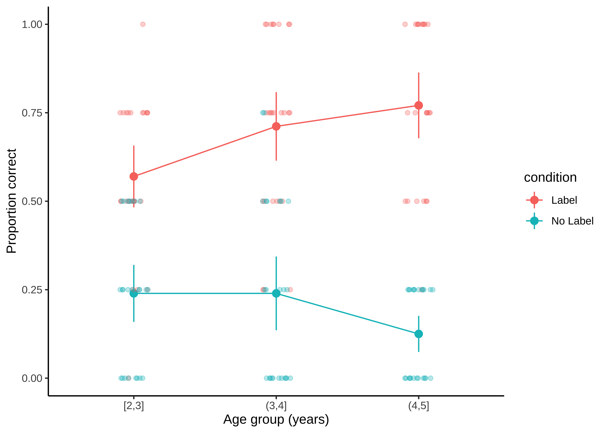

C Tidyverse
- Explain what “tidy data” is and why it’s a useful uniform format for behavioral data
- Master a set of tidyverse “verbs” for manipulating tidy data
- Begin exploring the set of tools that will let you make untidy data tidier.
- Explore extensions within this ecosystem
“Tidy datasets are all alike, but every messy dataset is messy in its own way.” - Hadley Wickham
This Appendix is a short tutorial on how to use the tidyverse family of packages in R. The tidyverse is a coherent “stack” for cleaning, manipulating, visualizing, and modeling data. It’s what we’ve used throughout this book both in the visible examples and on the back-end. It’s also – in our opinion – a really impressive piece of design thinking. The tidyverse implements a clear and flexible conceptual model for the manipulation of heterogeneous datasets. It takes a little while to get your head around this conceptual model, but it is very useful once you do!
Here’s the basic idea: In tidy data, every row is a single observation (trial), and every column describes a variable with some value describing that trial. And if you know that data are formatted this way, then you can do amazing things, basically because you can take a uniform approach to the dataset. Here’s a quote from Wickham & Grolemund (2016)284 This book, R for data scientists, is a free web book that provides a much deeper treatment of the concepts we introduce here and is a great reference for learning the tidyverse, written by its chief architect.:
There’s a general advantage to picking one consistent way of storing data. If you have a consistent data structure, it’s easier to learn the tools that work with it because they have an underlying uniformity. There’s a specific advantage to placing variables in columns because it allows R’s vectorised nature to shine.
Let’s explore what this means and how it works. We’ll do that first by exploring functions and “pipes”, then we’ll introduce tidyverse data manipulation. We’ll then look at how to make datasets tidier. Finally, we’ll end with some pointers towards future directions.
Unlike some of the other tutorials in this book, this one is meant to be worked on interactively. The best way to use it is to download the raw source code from here and read through, filling in the exercises as you go.
C.1 Functions and Pipes
Everything you typically want to do in statistical programming uses functions. mean is a good example. mean takes one argument, a numeric vector. Pipes are a way to write strings of functions more easily.285 We’re going to use the R native pipe, written |>. At time of writing, this new operator just replaced the “old” pipe, %>%. They bring the first argument of the function to the beginning.
We’ll use the mtcars dataset that’s built in with the tidyverse. Here’s what a sample of that dataset looks like, using the kable function (which we learned in Appendix B).
knitr::kable(head(mtcars), digits = 1)| mpg | cyl | disp | hp | drat | wt | qsec | vs | am | gear | carb | |
|---|---|---|---|---|---|---|---|---|---|---|---|
| Mazda RX4 | 21.0 | 6 | 160 | 110 | 3.9 | 2.6 | 16.5 | 0 | 1 | 4 | 4 |
| Mazda RX4 Wag | 21.0 | 6 | 160 | 110 | 3.9 | 2.9 | 17.0 | 0 | 1 | 4 | 4 |
| Datsun 710 | 22.8 | 4 | 108 | 93 | 3.9 | 2.3 | 18.6 | 1 | 1 | 4 | 1 |
| Hornet 4 Drive | 21.4 | 6 | 258 | 110 | 3.1 | 3.2 | 19.4 | 1 | 0 | 3 | 1 |
| Hornet Sportabout | 18.7 | 8 | 360 | 175 | 3.1 | 3.4 | 17.0 | 0 | 0 | 3 | 2 |
| Valiant | 18.1 | 6 | 225 | 105 | 2.8 | 3.5 | 20.2 | 1 | 0 | 3 | 1 |
We’ll look specifically at the mpg variable (miles per gallon). Instead of writing mean(mtcars$mpg), with a pipe you can write:
mtcars$mpg |> mean()That’s not very useful yet, but when you start nesting functions, it gets better. Let’s set up a gallons-per-mile function.
gpm <- function (mpg) {1/mpg}Now we can compute GPM and output the number we want like so:
round(mean(gpm(mtcars$mpg)), digits = 2)
#> [1] 0.05Write round(mean(gpm(mtcars$mpg)), digits = 2) with pipes.
Reading round(mean(gpm(mtcars$mpg))) out loud involves reading from the center outwards. In contrast, the piped version can be read from left to right, top to bottom. That’s what pipes are for: they let you write strings of functions so that they are readable and distinct. We’ll be doing a lot of piping of functions with multiple arguments later, and it will really help keep our syntax simple.
C.2 Tidy data analysis
Next we are going to put the pipe into action in our analysis of a real dataset. Here are the raw data from Stiller et al. (2015), a simple developmental language study that we can use as our example. In that study, children met a puppet named “Furble.” Furble would show them three pictures, e.g. face, face with glasses, face with hat and glasses and would say “my friend has glasses.” They then had to choose which face was Furble’s friend. (The prediction was that they’d choose glasses and not a hat, indicating that they’d made a correct pragmatic inference). In the control condition, Furble just mumbled, so the expectation was that children would pick at chance. Figure C.1 shows the stimuli.
 Figure C.1: Example stimulus from Stiller, Goodman, & Frank (2015).
Figure C.1: Example stimulus from Stiller, Goodman, & Frank (2015).
knitr::include_graphics("images/tidyverse/furble.png")The data from Stiller et al. (2015) are tidy: each row describes a single trial, each column describes some aspect of that trial, including their id (subid), age (age), condition (condition - “label” is the experimental condition, “No Label” is the control), item (item - which thing Furble was trying to find).
We are going to manipulate these data using “verbs” from the tidyverse. We’ll only look at four verbs today, but there are many other useful ones. Here are the four most common ones in many data analytic workflows:
filter- remove rows by some logical conditionmutate- create new columnsgroup_by- group the data into subsets by some columnsummarize- apply some function over columns in each group
C.2.1 Exploring and characterizing the dataset
First we will read in the data. Note that we are using read_csv from tidyverse. This function is a bit faster than read.csv in base R and has better defaults.
sgf <- read_csv("https://raw.githubusercontent.com/langcog/experimentology/main/data/tidyverse/stiller_scales_data.csv")It’s a very good idea to inspect your data before you start any analysis. One common method is using summary, which provides summaries of each variable. We recommend interactive tools like View or DT::datatable. This latter is very helpful in knitted R Markdown reports, but does require installing the DT package from CRAN.
DT::datatable(sgf)Now that we have examined the data, let’s go ahead and start manipulating it.
C.2.2 Filtering and mutating
There are lots of reasons you might want to remove rows from your dataset, including getting rid of outliers, selecting subpopulations, and so forth. For this purpose, filter is a verb (a function in the tidyverse) that takes a data frame as its first argument, and then as its second takes the condition you want to filter on.
So if you wanted to look only at two year olds, you could do this:286 Filter can take a either a single logical condition or a set of conditions, so you could also write filter(sgf, age > 2 & age < 3).s
filter(sgf, age >=2, age < 3)Here we’ve given sgf as the first argument to filter. But our general strategy is going to be using pipes. The way this works is that:
tidyverseverbs always take the data frame as their first argument, and- because pipes pull out the first argument, the data frame just gets passed through successive operations
- so you can read a pipe chain as “take this data frame and first do this, then do this, then do that.”
This piping thing is essentially the huge insight of the tidyverse: you can chain verbs into readable and efficient sequences of operations over dataframes, provided 1) the verbs all have the same syntax (which they do) and 2) the data all have the same structure (which they do if they are tidy).
So here’s our rewritten filter expression:
sgf |>
filter(age >= 2, age < 3)which yields this:
#> # A tibble: 192 × 5
#> subid item correct age condition
#> <chr> <chr> <dbl> <dbl> <chr>
#> 1 M22 faces 1 2 Label
#> 2 M22 houses 1 2 Label
#> 3 M22 pasta 0 2 Label
#> 4 M22 beds 0 2 Label
#> 5 T22 beds 0 2.13 Label
#> 6 T22 faces 0 2.13 Label
#> 7 T22 houses 1 2.13 Label
#> 8 T22 pasta 1 2.13 Label
#> 9 T17 pasta 0 2.32 Label
#> 10 T17 faces 0 2.32 Label
#> # … with 182 more rowsAdding columns to data frames is usually done to compute some kind of derived variable. mutate is the verb for these situations – it allows you to add a column to your dataset (or change one that already exists). Let’s add a discrete age group factor to our dataset.
sgf <- sgf |>
mutate(age_group = cut(age, 2:5, include.lowest = TRUE))Filter the sgf data so that only the “face” trial in the “Label” condition is present.
C.2.3 Standard descriptives using summarise and group_by
We typically describe datasets at the level of participants, not trials. We need two verbs to get a summary at the level of participants: group_by and summarise (kiwi spelling). Let’s start with grouping:
sgf |>
group_by(age_group) Grouping a dataframe alone doesn’t do much. All it does is add a grouping marker.
What summarise does is to apply a function to a part of the dataset to create a new summary dataset. Where these two verbs shine is in combination, though. Because summarise applies functions to columns in your grouped data, not just to the whole dataset!
You may at some point have done this kind of group level summary by writing code that looked schematically like this:
foo <- initialize_the_thing_being_bound()
for (i in 1:length(unique(sgf$item))) {
for (j in 1:length(unique(sgf$condition))) {
this_data <- sgf[sgf$item == unique(sgf$item)[i] &
sgf$condition == unique(sgf$condition)[j],]
do_a_thing(this_data)
bind_together_somehow(this_data)
}
}Don’t do that! This kind of code is very clunky and has all sorts of ways that it could go wrong. It’s also very slow to execute. Instead, here’s the tidyverse way:
sgf |>
group_by(age_group, condition) |>
summarise(mean_correct = mean(correct))That code yields this output:
#> # A tibble: 6 × 3
#> # Groups: age_group [3]
#> age_group condition mean_correct
#> <fct> <chr> <dbl>
#> 1 [2,3] Label 0.57
#> 2 [2,3] No Label 0.240
#> 3 (3,4] Label 0.712
#> 4 (3,4] No Label 0.240
#> 5 (4,5] Label 0.771
#> 6 (4,5] No Label 0.125Note the syntax here: summarise takes multiple new_column_name = function_to_be_applied_to_data(data_column) entries in a list. Using this syntax, we can create more elaborate summary datasets also:
sgf_means <- sgf |>
group_by(age_group, condition) |>
summarise(mean_correct = mean(correct),
sd_correct = sd(correct),
n_observations = length(subid))These summary data are typically very useful for plotting or displaying as tables, like this:
ggplot(sgf_means,
aes(x = age_group, y = mean_correct,
col = condition, group = condition)) +
geom_line() +
ylim(0,1) +
theme_classic() +
xlab("Age group (years)") +
ylab("Proportion correct")Figure C.2: Visualization of Stiller, Goodman, & Frank (2015) data after grouping and summary.

C.2.4 More advanced combos
A very common workflow in repeated measures experiments is to calculate participant-level means, and then compute the mean and variance and confidence intervals) across participants. This workflow gives you variances and confidence intervals that reflect variability across participants, rather than across trials. To execute it though, you need to group_by and summarise twice: once to get participant averages, and once to get the grand average. Here’s the pattern:
sgf_means <- sgf |>
group_by(age_group, condition, subid) |>
summarise(mean_correct = mean(correct)) |>
group_by(age_group, condition) |>
summarise(sd_correct = sd(mean_correct),
n_obs = length(mean_correct),
mean_correct = mean(mean_correct))Here’s a split-up version of this recipe that will allow you to compute confidence intervals.
sgf_sub_means <- sgf |>
group_by(age_group, condition, subid) |>
summarise(mean_correct = mean(correct))
sgf_group_means <- sgf_sub_means |>
group_by(age_group, condition) |>
summarise(sd_correct = sd(mean_correct),
n_obs = length(mean_correct),
sem = sd_correct / sqrt(n_obs),
ci = sem * 1.96,
mean_correct = mean(mean_correct))Now we can augment our prior plot by adding both the means and confidence intervals as well as the raw data.
ggplot(sgf_group_means,
aes(x = age_group, y = mean_correct,
col = condition, group = condition)) +
geom_line() +
geom_pointrange(aes(ymin = mean_correct - ci,
ymax = mean_correct + ci)) +
geom_jitter(data = sgf_sub_means, alpha = .3,
width = .1, height = .0) +
ylim(0,1) +
xlab("Age group (years)") +
ylab("Proportion correct") +
theme_classic()Figure C.3: Visualization of Stiller, Goodman, & Frank (2015) data after grouping and summary, now with participant-level 95% confidence intervals and visualization of individual participant means.
Challenge: Adapt the code above to split the data by item, rather than by age group. For an extra challenge, plot the data this way as well.
C.3 Getting your data tidy
We’ve now shown you some of the very nice things you can do once you have tidy data! But how do you get your data to be tidy?
Psychological data often comes in two flavors: long and wide data. Long form data is tidy, but that format is less common. It’s much more common to get wide data, in which every row is a case (e.g., a subject), and each column is a variable. In this format multiple trials (observations) are stored as columns. Wide data can be organized a bunch of ways, but the most common might be to have subjects as rows and trials as columns.
For example, let’s take a look at a wide version of the sgf dataset above.
sgf_wide <- read_csv("https://raw.githubusercontent.com/langcog/experimentology/main/data/tidyverse/sgf_wide.csv")Here it is:
#> # A tibble: 150 × 8
#> subid age condition age_group beds faces houses pasta
#> <chr> <dbl> <chr> <chr> <dbl> <dbl> <dbl> <dbl>
#> 1 C1 4.16 Label (4,5] 1 1 1 1
#> 2 C10 3.46 Label (3,4] 1 0 0 1
#> 3 C11 4.22 Label (4,5] 1 1 0 1
#> 4 C12 3.56 Label (3,4] 1 1 0 1
#> 5 C13 4.38 Label (4,5] 1 0 1 0
#> 6 C14 4.57 Label (4,5] 1 1 1 0
#> 7 C15 3.59 Label (3,4] 1 1 1 1
#> 8 C16 3.22 Label (3,4] 1 0 0 1
#> 9 C17 3.25 Label (3,4] 0 1 0 1
#> 10 C18 4.95 Label (4,5] 1 0 1 1
#> # … with 140 more rowsThe two main verbs for tidying are pivot_longer and pivot_wider. There are lots of others in the tidyr package (for example, if you want to separate columns), but we won’t cover those here.
Here, we’ll just show how to use pivot_longer to make the data tidy. We’ll try to make a single column called item and a single column called correct rather than having four different columns, one for each item. This is the key tricky of pivoting to longer form data – you need to imagine what the “missing label” is that unifies all the columns you are making longer.
Specifically, pivot_longer takes three arguments:
- A
tidyselectway of getting columns – the columns you want to make longer. You can select them by name (e.g.beds, faces, houses, pasta), you can use numbers (e.g.,5:8), or you can use markers likestarts_with(...). - A
names_toargument. this argument is the name of the column names. In this case, the column names are items, so the “missing label” for them isitem. - A
values_toargument – the name of the thing in each column, in this case, the accuracy of the response (correct).
Let’s try it:
sgf_wide |>
pivot_longer(beds:pasta,
names_to = "item",
values_to = "correct")
#> # A tibble: 600 × 6
#> subid age condition age_group item correct
#> <chr> <dbl> <chr> <chr> <chr> <dbl>
#> 1 C1 4.16 Label (4,5] beds 1
#> 2 C1 4.16 Label (4,5] faces 1
#> 3 C1 4.16 Label (4,5] houses 1
#> 4 C1 4.16 Label (4,5] pasta 1
#> 5 C10 3.46 Label (3,4] beds 1
#> 6 C10 3.46 Label (3,4] faces 0
#> 7 C10 3.46 Label (3,4] houses 0
#> 8 C10 3.46 Label (3,4] pasta 1
#> 9 C11 4.22 Label (4,5] beds 1
#> 10 C11 4.22 Label (4,5] faces 1
#> # … with 590 more rowsWe can compare this data frame to sgf and see that we’ve recovered the original long form.
Use pivot_wider to try and make sgf_wide from sgf. The two arguments you need are names_from and values_from, which specify the names and values (just like in pivot_longer).
C.4 Tidyverse: Chapter sumamry
The tidyverse has been a transformative tool for data analysis. With a little practice it can make many seemingly-difficult tasks surprisingly easy. We encourage you to continue practicing and reading examples online, as there are often clever ways to use this idiom to make complex data-related tasks much more manageable.